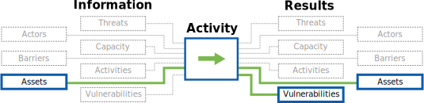

Developed with ❤ by

Information Innovation Lab
Applied research and development of public interest technology.
This component allows the auditor to test the strength of defenses the host has in place to protect their local area network. This component consists of gaining access to the local area network through a wireless access point and unsecured physical channels (such as an ethernet jack).
By walking organizations through the vulnerabilities of wireless networks, you have the opportunity to discuss password strength, and the power that having "offline" access to a password means in terms of brute forcing it, as well as the importance of defense in depth even within their trusted work network - reducing the services computers and servers are sharing, setting up local firewalls on computers, and requiring authentication to access files.
Even a few minutes of network "sniffing" by an adversary can enable them to work offline to reveal the network password. Knowing this password would let someone then access the entire internal network, files shared internally, and even change network settings to enable remote access. While in an ideal setup, this would give no further access to sensitive documents, it is not uncommon to find shared file folders, or to gain access to the firewall or network routers (often set to the default password, because they're only accessible from inside the network...).

Note: If you didn't manage to break through the password, it's not worth the precious audit time to brute force it - simply ask for the password and move on. If it's a WPA network, you can work on cracking the password after hours, if only to demonstrate the amount of time their current password would "protect" them for against a dedicated attacker.
Note: This section is one of the few sections where the SAFETAG audit does go through attack scenarios, from attempting to "break in" to the wireless network to testing exposed ethernet jacks for connectivity.
The reasons for this are threefold. First, access to an organization's internal network tends to reveal sensitive data and "shadow" infrastructures (such as dropbox usage) that lead to many recommendations to improve access control and discussions of the value of defense in depth. Second, the specific act of breaking the wifi password allows for a discussion on password security without attacking any specific user's password. Finally, with wireless networks treated as equivalent to wired networks in many offices, reminding the organization that wireless networks extend beyond the physical walls of the office is useful in discussing password rotation and guest network policies.
Once you have access to the network, you need to first document how you managed that and share it with the hosts. This is a great moment to discuss passwords in many cases.
!INCLUDE "wireless_access_guides.md"
Guide: "Common/default passwords" (Penetration Execution Standard)
List: "Default Password List" (defaultpassword.com)
List: "Default Password List" (CIRT.net)
List: "Default Password List - 2007" (Phenoelit)
Applied research and development of public interest technology.